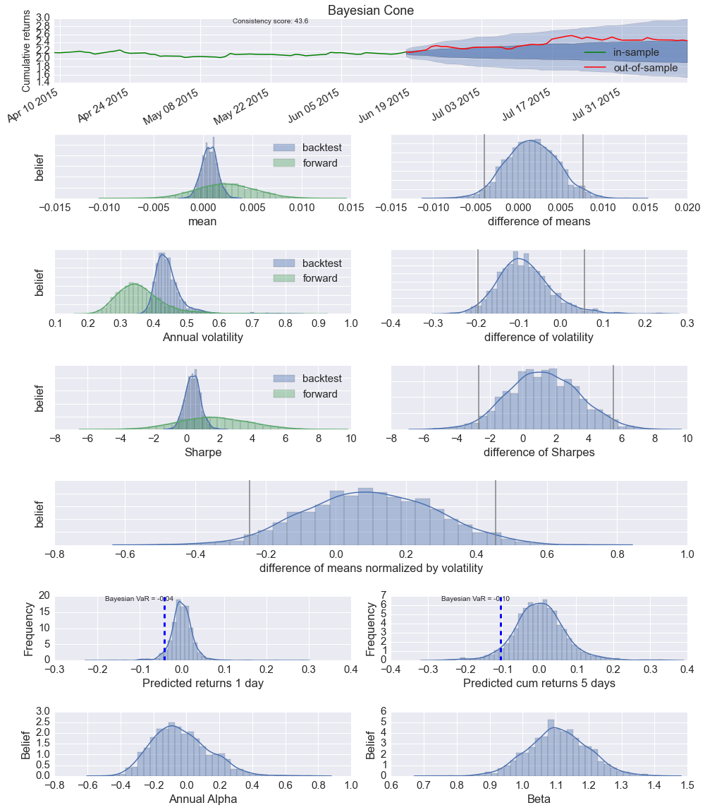
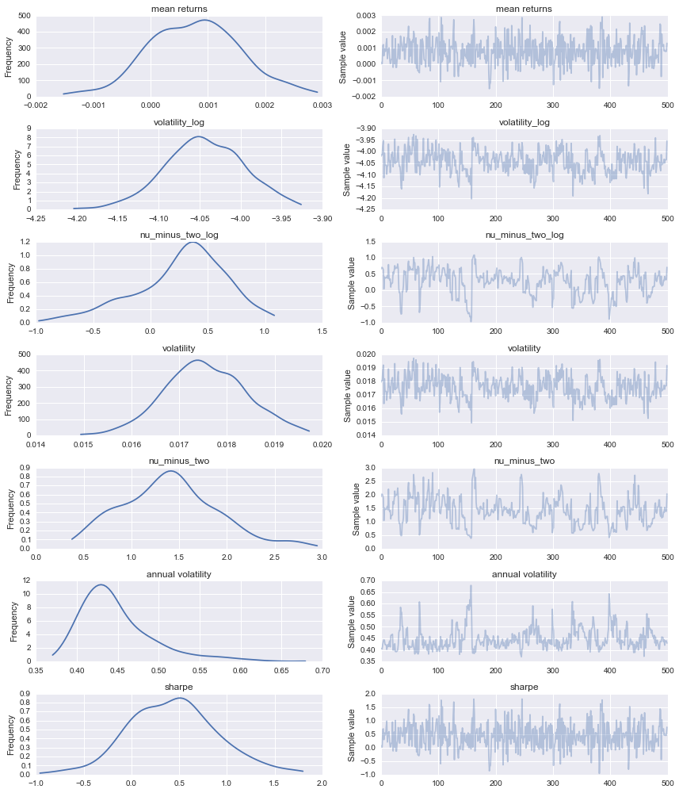

Bayesian performance analysis example in pyfolio
There are also a few more advanced (and still experimental) analysis methods in pyfolio based on Bayesian statistics.
The main benefit of these methods is uncertainty quantification. All the values you saw above, like the Sharpe ratio, are just single numbers. These estimates are noisy because they have been computed over a limited number of data points. So how much can you trust these numbers? You don't know because there is no sense of uncertainty. That is where Bayesian statistics helps as instead of single values, we are dealing with probability distributions that assign degrees of belief to all possible parameter values.
Lets create the Bayesian tear sheet. Under the hood this is running MCMC sampling in PyMC3 to estimate the posteriors which can take quite a while (that's the reason why we don't generate this by default in create_full_tear_sheet()).
Import pyfolio
%matplotlib inline
import pyfolio as pf
Using gpu device 0: NVS 5200M
Fetch the daily returns for a stock
#stock_rets = pf.utils.get_symbol_rets('FB')
import pandas as pd
stock_rets = pd.read_pickle('fb.pickle')
Create Bayesian tear sheet
out_of_sample = stock_rets.index[-40]
pf.create_bayesian_tear_sheet(stock_rets, live_start_date=out_of_sample)
[-----------------100%-----------------] 2000 of 2000 complete in 2.7 sec
/home/wiecki/miniconda3/lib/python3.4/site-packages/matplotlib/axes/_axes.py:475: UserWarning: No labelled objects found. Use label='...' kwarg on individual plots.
warnings.warn("No labelled objects found. "

Lets go through these row by row:
- The first one is the Bayesian cone plot that is the result of a summer internship project of Sepideh Sadeghi here at Quantopian. It's similar to the cone plot you already saw at in the tear sheet above but has two critical additions: (i) it takes uncertainty into account (i.e. a short backtest length will result in a wider cone), and (ii) it does not assume normality of returns but instead uses a Student-T distribution with heavier tails.
- The next row is comparing mean returns of the in-sample (backest) and OOS (forward) period. As you can see, mean returns are not a single number but a (posterior) distribution that gives us an indication of how certain we can be in our estimates. As you can see, the green distribution on the left side is much wider representing our increased uncertainty due to having less OOS data. We can then calculate the difference between these two distributions as shown on the right side. The grey lines denote the 2.5% and 97.5% percentiles. Intuitively, if the right grey line is lower than 0 you can say that with probability > 97.5% the OOS mean returns are below what is suggested by the backtest. The model used here is called BEST and was developed by John Kruschke.
- The next couple of rows follow the same pattern but are an estimate of annual volatility, Sharpe ratio and their respective differences.
- The 5th row shows the effect size or the difference of means normalized by the standard deviation and gives you a general sense how far apart the two distributions are. Intuitively, even if the means are significantly different, it may not be very meaningful if the standard deviation is huge amounting to a tiny difference of the two returns distributions.
- The 6th row shows predicted returns (based on the backtest) for tomorrow, and 5 days from now. The blue line indicates the probability of losing more than 5% of your portfolio value and can be interpeted as a Bayesian VaR estimate.
- Lastly, a Bayesian estimate of annual alpha and beta. In addition to uncertainty estimates, this model, like all above ones, assumes returns to be T-distributed which leads to more robust estimates than a standard linear regression would.
Running models directly
You can also run individual models. All models can be found in pyfolio.bayesian and run via the run_model() function.
help(pf.bayesian.run_model)
Help on function run_model in module pyfolio.bayesian:
run_model(model, returns_train, returns_test=None, bmark=None, samples=500)
Run one of the Bayesian models.
Parameters
----------
model : {'alpha_beta', 't', 'normal', 'best'}
Which model to run
returns_train : pd.Series
Timeseries of simple returns
returns_test : pd.Series (optional)
Out-of-sample returns. Datetimes in returns_test will be added to
returns_train as missing values and predictions will be generated
for them.
bmark : pd.Series (optional)
Only used for alpha_beta to estimate regression coefficients.
If bmark has more recent returns than returns_train, these dates
will be treated as missing values and predictions will be
generated for them taking market correlations into account.
Returns
-------
pymc3.sampling.BaseTrace object
A PyMC3 trace object that contains samples for each parameter
of the posterior.
For example, to run a model that assumes returns to be normally distributed, you can call:
# Run model that assumes returns to be T-distributed
trace = pf.bayesian.run_model('t', stock_rets)
[-----------------100%-----------------] 500 of 500 complete in 0.9 sec
The returned trace object can be directly inquired. For example might we ask what the probability of the Sharpe ratio being larger than 0 is by checking what percentage of posterior samples of the Sharpe ratio are > 0:
# Check what frequency of samples from the sharpe posterior are above 0.
print('Probability of Sharpe ratio > 0 = {:3}%'.format((trace['sharpe'] > 0).mean() * 100))
Probability of Sharpe ratio > 0 = 85.0%
But we can also interact with it like with any other pymc3 trace:
import pymc3 as pm
pm.traceplot(trace);

Further reading
For more information on Bayesian statistics, check out these resources:
- A blog post about the Bayesian models with Sepideh Sadeghi: http://blog.quantopian.com/bayesian-cone/
- My personal blog: http://twiecki.github.io/
- A talk I gave in Singapore on Probabilistic Programming in Quantitative Finance: http://blog.quantopian.com/probabilistic-programming-for-non-statisticians/
- The IPython NB book Bayesian Methods for Hackers.